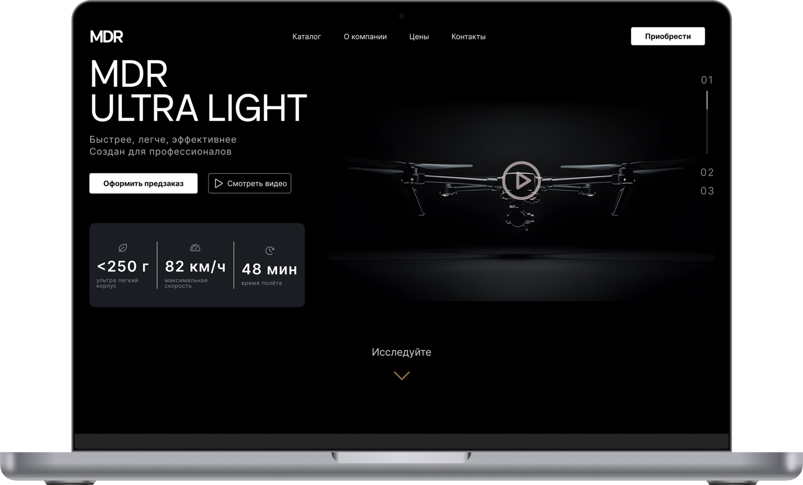
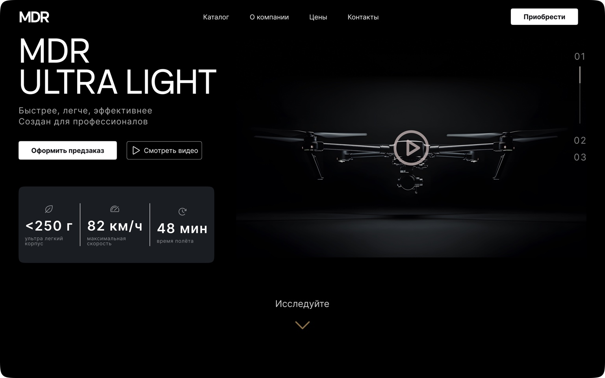
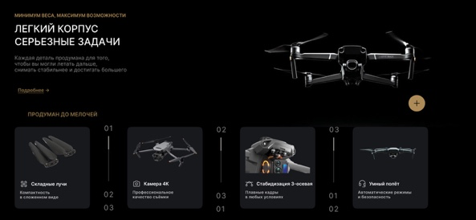
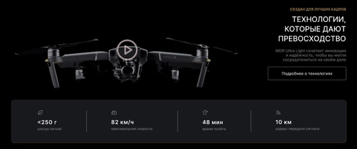
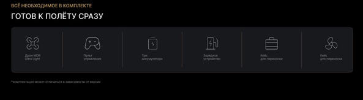
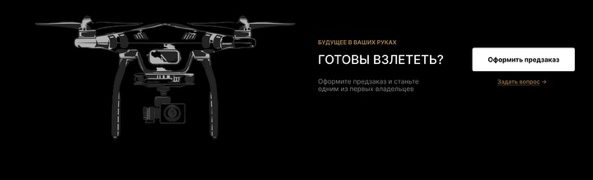

Знакомство
На первом экране крупный ракурс дрона соседствует с тремя характеристиками. Они дают быстрый ориентир для дальнейшего просмотра.
ПРОДУКТОВЫЙ ЛЕНДИНГ · UX/UI
Концепт лендинга лёгкого дрона для создателей видео. Страница помогает понять, подходит ли устройство для съёмки, изучить возможности камеры и комплект, затем перейти к предзаказу.

Задача
Для поездки важны вес и размер в сложенном виде. Для видеосъёмки — возможности камеры и стабилизации. Перед предзаказом покупатель проверяет комплект и хочет понимать условия. Для лендинга это три разных задачи, которым нужна разная глубина информации.
На первом экране крупный ракурс дрона соседствует с тремя характеристиками. Они дают быстрый ориентир для дальнейшего просмотра.
Складные лучи, камера и стабилизация раскрываются отдельными карточками. Ниже сводка собирает числовые характеристики вместе.
Список комплекта появляется перед финальной кнопкой. Покупатель может сверить, какие аксессуары показаны в макете, прежде чем перейти дальше.
Проектные сценарии
Переключатель показывает три варианта приоритета контента. В каждом есть вопрос покупателя, ответ исходного макета и сведения, которые пригодились бы для принятия решения.
Характеристики взяты из концепта. Их значения и условия измерения нужно подтвердить перед публикацией продуктовой страницы.
Дизайн
Чёрный фон выделяет силуэт устройства. Светлые кнопки отмечают предзаказ, золотые акценты связывают заголовки и навигацию внутри макета. Характеристики разнесены по карточкам и продублированы в сводке для быстрого сравнения.

Название модели, предзаказ, вход в видео и три характеристики видны сразу.

Карточки отделяют конструкцию, камеру, стабилизацию и режимы полёта.

После блока технологий параметры собраны в одну строку.

Пиктограммы помогают быстро сверить устройство и аксессуары.

Финальный экран повторяет основное действие и предлагает задать вопрос.
Результат и проверка
Готовый результат проекта — десктопный макет от первого экрана до предзаказа. На следующей итерации стоит проверить понимание характеристик, поиск состава комплекта и чтение условий предзаказа на десктопе и мобильном.
Попросить участника объяснить, какой параметр важен для его задачи и почему. Фиксировать, где он нашёл ответ и чего ему не хватило.
Попросить найти аккумуляторы и зарядное устройство. Сравнить, помогает ли краткий список рядом с кнопкой быстрее ответить на вопрос.
Дать участнику пройти до подтверждения в прототипе и объяснить, какая комплектация выбрана, сколько она стоит и когда ожидается поставка.